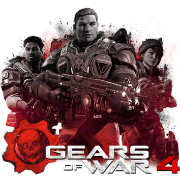

SHOOTERS

Son conocidos también como “juegos shooters” estos según la temática y desarrollo pueden clasificarse en diferentes subgéneros como disparos en primera persona, disparos en tercera persona, disparos en primera persona multijugador masivo en línea, acción táctica, videojuegos de disparos de desplazamiento lateral, mata marcianos y videojuegos de pistola. Caracteristicas de los shooters
El jugador puede ver disparos en primera persona o desde una cámara que sigue al personaje por la espalda desde una cierta distancia y elevación. También es posible encontrar juegos que disponen de una cámara fija.
Los juegos que hacen uso de elementos “realistas”, como pueden ser armas que existen en la realidad, o la simulación del daño del personaje, se suelen llamar shooters tácticos. Aquellos que permiten más libertad respecto a escenarios, objetos, o la física del juego son conocidos como shooters arcade. No hay una clara distinción entre ambos tipos, estando la mayoría de los shooters en un abanico entre ambos.
Mientras que la mayoría de los shooters se juegan con un solo personaje, algunos ofrecen la oportunidad de controlar un grupo de personajes; generalmente manejando a uno y dando órdenes a los demás. Los juegos en los que aparece un grupo de personajes ayudando al principal, pero que no son manejables, no se consideran juegos en grupo.
Esta es la característica principal (en los últimos tiempos) que hacen de este tipo de juegos más populares. Si el shooter hace uso de internet, se puede catalogar en una serie de divisiones: Los juegos en equipo son aquellos en los que cada jugador es asignado a un equipo entre varios (2 o más) para conseguir un objetivo. Para ello, los jugadores participan en el mismo equipo pero cada uno tiene su puntuación. Los juegos cooperativos tienen a numerosos jugadores jugando en compañía para conseguir unos objetivos y puntuación conjuntos. En los juegos individuales todos los jugadores compiten contra todos. Algunos juegos permiten elegir el modo de juego al que se desea jugar entre estos tres tipos.
Es una manera opcional de clasificar un shooter, pero en ocasiones es necesaria para distinguirlo. Un shooter puede estar enfocado a la infiltración en lugar de la acción. Otros pueden tener elementos de terror.